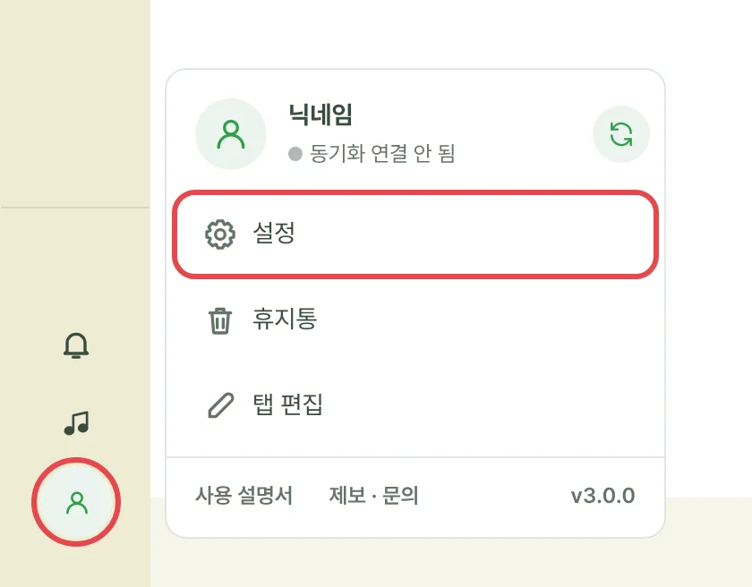
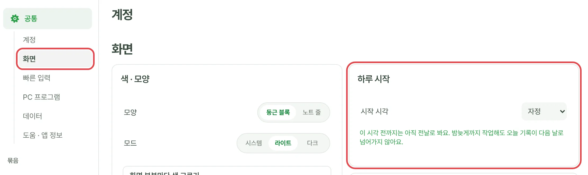

업데이트 노트
앱 안 업데이트 노트와 같은 글입니다. 작은 오류 수정은 알림 없이 바로 반영되어 여기에는 따로 적지 않습니다. 헷갈릴 만한 곳은 그림으로 자리를 표시해 두었습니다.
v3.0.0 2026.11.15
- 새 얼굴: 사이드바 · 설정 · 모든 탭 머리줄을 새로 짰어요. 이름이 바뀐 곳: 사이드바 '플래너' 묶음 → '시간', 연간 → 1년 달력, 같은 날 → 매해 오늘

- 묶음: 기본 · 업무 · 생활 · 기록, 쓰고 싶은 것만 켜서 써요
- 컨디션 한 화면(트래커 · 복약 · 마음) · 할 일 새 화면(PC · 폰)
- 업무: 외주 작업대 · 사무 블록 · 작업 트래커 · 신청서 가져오기(PC 프로그램)
- 생활: 가계부 새 화면 · 살림 · 기록: 스크랩북 · 매해 오늘
- 다이어리: 책상에서 권을 골라 펼치고, 쪽을 넘기며 꾸며요
- 대시보드: 새 블록(날씨 · 타이머 · 장보기 · 화분 · 어항 등), 블록마다 모양 고르기, 기본 배치 8개
- 블록 판: 대시보드처럼 가계부 · 월간 · 사무에서도 블록을 옮기고 크기를 바꿔요
- 새해 준비 탭 · 만다라트 · 한 해 노트
- 간편 입력창 · 빠른 입력 새 모양
- 구글 드라이브 동기화 · 구글 캘린더 자동 동기화
- 새 테마 맑은 하늘 · 복숭아 크림
- 베타였던 기능 28개를 모두에게 열었어요
- 설문 의견 반영: 하루가 넘어가는 시각을 직접 정해요 (설정 › 공통 › 화면 › 하루 시작)

- UI 개선


v2.3.20 2026.11.07
- 새 사이드바: 폴더로 묶기 · 끌어서 순서 바꾸기 · 넓게 보기 · 우클릭 메뉴
- 다이어리 · 대시보드 꾸미기: 스티커 · 말풍선 · 액자 · 라벨
- 폰: 아래 막대 다듬기 · 타임테이블 빈 칸을 누르면 새 일정 · 뒤로 가기는 이전 탭
- 구글 캘린더 연결과 기기 간 동기화를 더 튼튼하게 고쳤어요
- 모두에게 열림: 가계부 고정 수입·지출 · 지역 · 아카이브 묶음
- UI 개선
v2.3.19 2026.11.06
- 레코드를 아카이브 · 수집으로 나눴어요 · ‘+ 분류’를 만들 때 어느 쪽인지 골라요
- 레코드 편집: 여러 개 한꺼번에 넣기 · 여러 개 고르기
- 스크랩북: 갤러리 · 긴 글 · 스레드를 한곳에 (PC 사이드바 · 폰 서랍)
- 스레드: 답글 밑에서 바로 이어 쓰기 · 마음/책갈피/검색에서 그 글로 바로 가기
- 제보함·설문·문의로 보내 주신 좋은 말씀을 닉네임 없이 Daterbase 소개에 쓸 수 있어요. 원치 않으시면 제보함으로 말씀해 주세요.
- UI 개선
v2.3.18 2026.11.05
- 빠른 입력 새 모양 · (베타) ‘보고서 내일로’처럼 할 일 옮기기·끝내기, ‘이번 달 식비 얼마’ 같은 질문
- (베타) PC에 떠 있는 빠른 입력 창
- (베타) 일정 시간 알림이 ‘확인’을 누를 때까지 카드로 남아요
- 업무: 직접 입력 ‘시’ 칸 바로 쓰기 · (베타) 작업 기록 편의 기능
- 가계부 돌아보기 질문을 접어 둘 수 있어요
- ‘폰 보관함’ 이름을 ‘대시보드’로
- 새 버전은 화면을 쓰지 않을 때 조용히 적용돼요
- 하루 결산 알림 시간이 자정을 넘겨도 맞게 떠요
- 대시보드 타임테이블 고정·편집 중 빈 칸 고침
- 지운 설정과 베타 켜기도 다른 기기로 동기화돼요
- UI 개선
v2.3.17 2026.11.04
- 설정 › 기능 켜고 끄기: 판매 묶음(기본 · 업무 · 생활 · 기록) 카드로 정리 · 서브 탭도 하나씩 켜고 꺼요
- 플래너 칸 이름 정리: PC 첫 칸 ‘월간’ · 폰 첫 칸 ‘오늘’
- 앱 안 이모지를 모두 선 아이콘으로 바꿨어요
- ‘투명도’ 라벨을 ‘불투명도’로 (100%가 다 보이는 상태)
- 구글 일정 찾기 한 칸으로 간단하게 · 폰 홈 화면 앱 구글 로그인 고침
- 숨긴 탭이 새 브라우저에서 다시 보이던 것 고침
- UI 개선
v2.3.16 2026.11.03
- 크리스마스 테마 ‘전나무 오두막’ 팔레트
- 사이드바: 고른 탭의 서브 탭을 한 상자로 묶었어요 · 창이 낮아도 칸이 줄지 않고 스크롤돼요
- 1년 달력: 점 근처에 마우스만 올려도 그날 일정 이름이 떠요
- 라벨 색을 직접 고르면 구글 캘린더 색으로 되돌아가지 않아요
- 오늘 컨디션 카드에 ‘작성 완료’ 버튼
- 빠른 입력: 마이크로 넣은 글은 정리창에서 먼저 확인해요
- 다이어리: 글자 크기를 px로 · 글꼴 버튼에 지금 글꼴 이름
- UI 개선
v2.3.15 2026.11.03
- 연간 탭 ‘결산’: 한 해 돌아보기 카드와 새해 계획
- 마음 기록: ‘이번 주’ 보기
- 외주: 오늘 작업 기록 줄마다 ✎로 양 · 걸린 시간 바로 입력
- 작은 창에서 우클릭 메뉴에 닫기 줄
- UI 개선
v2.3.14 2026.11.02
- 외주 · 복약 기록 · 나 탭(마음 기록 · 복약)을 모두 쓸 수 있어요
- 업무 탭: 하는 일만 골라 보기 · 커미션 · 외주 · 사무로 나누기 · 외주 마감 뒤 작업 분석 · 과정 타이머 쉬기
- 1년 달력: 하루짜리 일정은 점으로 · 월 달력에서 숨긴 일정은 1년 달력에도 안 보여요
- 트래커: 연속 N일째
- 폰 홈 화면 아이콘을 길게 눌러 빠른 입력 · 오늘 · 업무 · 가계부로 바로 가기
- 더 가볍고 빨라졌어요
v2.3.13 2026.10.30
- 테마: 배경지 8종 (종이 결 · 모눈 · 점 …, 설정 › 기본 색 아래) · 새 팔레트 온실 · 라일락 · 새벽 · 팔레트마다 다크 색
- 대시보드: 옆에 타임테이블을 띄워도 블록 비율이 그대로 · 할 일 블록에서 일정과 할 일을 나눠 보여요
- 폰: 캘린더 탭과 처음 켤 때가 더 빨라졌어요 · 스티커를 크게
- 켤 때 마지막으로 보던 탭으로 열려요
- 테스터 코드 없이 ‘새 기능 먼저 써 보기’ 하나로
- 용어 정리: 업무 탭 · 월간 · 제보·문의 · 메모지 라벨
- UI 개선
v2.3.12 2026.10.28
- 커미션 완성작: 그림·글·디자인·수공예 중 작품 형태를 골라 보기 (글은 완성 원고와 글자 수)
- 커미션: 연성 교환은 금액·입금 없이 받을 것·받은 날로 기록하고, 수익·가계부에서 빠져요
- 워터마크 창을 새로 정리했어요 · 갤러리에서 우클릭으로도 열려요
- 구글 캘린더 반복 일정을 반복 그대로 가져오고 보내요
- 영어 · 일본어로 빠른 입력
- 메모지: 윈도우 스티커 메모 가져오기 (메모지 목록 ⋯)
- 앱 아이콘: ＋ 메뉴에서 눌러서 여는 아이콘 붙이기
- 작업 도장 달력이 도장판 모양으로
- 글자 크기 설정이 모든 화면에
- 처음 보이는 예시 일정에 ‘예시 일정’ 띠 · 예시 지우기
- 익명 사용 통계 (설정 › 공통 › 데이터·도움 › 사용 통계에서 끄기)
- 원래 있던 기능: 지난 날 색칠 · 달력 칸 안 순서 (달력 보기), 카드 글자 크기 (대시보드 카드 우클릭), 워터마크 붙여 올리기 (커미션 완성본), 켤 때 타이틀 화면 (설정 › 공통)
- UI 개선
v2.3.11 2026.10.27
- 대시보드 레이아웃: 블록 배치 · 시계 · 달력 · 음악 · 바로가기 블록
- 움짤 캡처
- UI 개선
v2.3.10 2026.10.27
- 새 기능 먼저 써 보기: BGM 목록 여러 개 · 제목·가수·사진 고치기 · 스포티파이 링크
- 서브 메뉴를 하나만 켜 두면 그 메뉴가 대표 탭
- 설정 › 기능에서 빠른 입력 바 끄고 켜기
- UI 개선
v2.3.9 2026.10.27
- 아이콘 새로 그림: 메인 탭은 채운 아이콘, 하위 탭은 선 아이콘
- 새 기능 먼저 써 보기: 업무 모드 (일 탭에서 지금 할 일만 · 끝낼 때 오늘 한 일)
- 대시보드 달력: 라벨 고르기 · 반복 일정 · 한 칸에 여러 개
- UI 개선
v2.3.8 2026.10.27
- 1년 달력: 메모칸 끄기 · 날짜 칸이 화면 너비에 맞춰요
- 새 기능 먼저 써 보기: 일 탭(하는 일 고르기 · 사무), 외주 작업·휴식 기록
- UI 개선
v2.3.7 2026.10.27
- 대시보드 이미지 복사 · 붙여넣기 때 크기 · 테두리 그대로
- 캡처에 이미지 테두리도 찍혀요
- UI 개선
v2.3.6 2026.10.27
- 처음 시작 화면 · 커미션 빈 화면 · 사이드바 선택 표시 다듬기
v2.3.5 2026.10.27
- 새 커미션: 닉네임·타입·마감만 먼저 묻고 나머지는 ‘더 적기’로
- UI 개선
v2.3.4 2026.10.27
- UI 개선
v2.3.3 2026.10.27
- UI 개선
v2.3.2 2026.10.26
- UI 개선
- 외주: 높이를 정한 블록에서 글자가 넘치던 오류 수정 (블록 안에서 스크롤)
- 외주: 걸린 시간을 3번 이상 재면 직접 적은 값 대신 잰 평균으로 계산해요
- 대시보드 보드: 다른 모서리로 크기를 바꿔도 옆 블록에 맞춰 붙어요
- 처음 시작 질문을 다듬고, 첫 화면에서 시작하기 카드 · ＋ 버튼 · 길잡이가 내용을 가리지 않게 했어요
- 달력: 다이어리를 쓴 날에만 점이 보여요 (빈 날은 마우스를 올리면 ○)
- 플래너 아이콘을 공책 모양으로 바꾸고, 폰 ☰ 버튼에 지금 탭 아이콘을 보여줘요
v2.3.1 2026.10.26
- 사이드바: 탭 우클릭 › 숨기기, 숨긴 탭은 사이드바 아래 눈 아이콘에서 다시 꺼내요 · ⌄⌄ 버튼으로 하위 탭 모두 펼치기
- 설정 초기화: 데이터는 그대로 두고 설정만 처음 상태로 (되돌리기 가능)
- ＋ 버튼: 우클릭 › 보이기 › ‘탭에 맞는 것만’을 고르면 지금 탭에 맞는 것만 먼저 보여요
- ‘새 기능 먼저 써 보기’를 켜면 업무 탭 나누기: 커미션 · 외주 · 사무를 사이드바에 따로 두어요
v2.3.0 2026.10.26
- 커미션: 합계를 직접 적을 수 있어요 (비우면 자동 계산)
- 제보 창에서 이름 없이 익명 후기를 남길 수 있어요
- 작업 시간: 블록에서 바로 ▶ 시작· 멈춤, 톱니바퀴가 숨기기 버튼과 겹치던 오류 수정
- 가계부: 이 달 내역에서 고치기가 안 열리던 오류 수정
- 끌어서 순서를 바꿀 때 들어갈 자리에 줄이 보여요 · 하루 화면 할 일도 끌어서 순서를 바꿔요
- 플래너 탭 이름 통일 (오늘 · 월간 · 연간 · 마음 기록 · 복약 기록) · 사이드탭 편집에 ‘처음 순서로’
- 하루 결산 카드에서 뜨는 시간을 바로 바꿔요
- 갤러리 빈 화면에 올리기 상자 · 원고는 ‘미리보기’로 (눌러서 넘기고 Esc · 우클릭으로 닫기)
- PC 프로그램에서 커미션 받은 곳·타입·추가금 추가 버튼이 안 눌리던 오류 수정
v2.2.99 2026.10.25
- 아카이브: 보관함 · 구역 배치 · 칸막이 정렬, 제목으로 표지·줄거리 채우기, 왓챠 영화 포스터·장르를 모두에게 열었어요
- 아카이브: 책장 줄 끝 책이 반쯤 잘리던 오류 수정
- 커미션 설정: 받은 곳 줄마다 수수료를 바로 적어요
- ‘새 기능 먼저 써 보기’를 켜면 영어·日本語 화면에서 빠른 입력을 영어·일본어로 쓰고, 돈 단위(₩ · $ · ¥)를 골라요
- 영어·日本語로 처음 시작하면 예시 일정·분류·답장 템플릿도 그 언어로 채워요
- ‘새 기능 먼저 써 보기’를 켜면 구글 캘린더: 반복 일정도 구글과 주고받아요
- 연간 탭(연력)을 모두에게 열었어요: 플래너 › 연간
- 외주: 남은 페이지 옆에 남은 컷 수도 보여요
- 타임테이블: 블록 아래 변을 끌어 시간을 늘리고 줄여요 (폰도)
- ‘새 기능 먼저 써 보기’를 켜면 아카이브: 제목을 넣으면 표지·줄거리·장르·연도를 알아서 채워요
- 아카이브: 한줄평을 여러 줄로 쓸 수 있어요
- 아카이브: 시트 날짜가 오늘로 뜨던 오류 수정, 자세히 창에서 날짜를 눌러 고치기, 포스터가 옆 책에 가려지던 것 수정
- ‘새 기능 먼저 써 보기’를 켜면 외주: 마감이 지난 뒤 한 작업을 내 작업 패턴과 작업 상세에서 따로 보여 줘요
- 달력: 여러 날 일정은 편집창에서 일정마다 막대·화살표를 골라요, 화살표는 선 모양으로
- 아카이브: 데이터가 많을 때 더 빠르게, 책장 가로 스크롤 없이 오른쪽 끝 책은 포스터가 왼쪽에, 다른 작품이 열리던 오류 수정
- UI 개선: 좁은 PC 창에서 메모지와 타임테이블을 같이 열면 하나만 펼쳐져요
- ‘새 기능 먼저 써 보기’를 켜면 아카이브: 보고싶어요는 보관함 상자로, 진행 중·완료 2열 보기
- ‘새 기능 먼저 써 보기’를 켜면 아카이브 영화: 왓챠에서 가져오면 포스터·장르·줄거리가 자동으로, 자세히 창에 타이틀 로고와 스틸컷 갤러리
- ‘새 기능 먼저 써 보기’를 켜면 아카이브: 칸막이 꽂기 정렬, 카테고리별 보기, 여러 개 고르기, 태그마다 완료 도장 안 찍기
v2.2.98 2026.10.25
- 외주: 마감이 지나면 ‘마감 N일 지남’과 과정별 남은 페이지로 보여요
- ‘새 기능 먼저 써 보기’를 켜면 연간 탭(연력 · 올해 목표)을 써 볼 수 있어요
- 베타를 켜면 지금 먼저 써 볼 수 있는 기능을 알려 줘요
- 켤 때 타이틀 화면에 내 프로필 닉네임·사진이 나와요
- 이미지 블록 우클릭 정리: 정렬(위 · 가운데 · 아래), 갤러리 슬라이드 · 배치는 묶어서
v2.2.97 2026.10.25
- 빈 이미지 칸 안내 글 빼고 ＋만 남기기
- 이미지 블록도 크기 조절할 때 다른 블록 높이에 스냅
- 켤 때 타이틀 화면은 늘 Daterbase로
- 설정을 열어도 개발자 도구 탭이 제자리에
- 갤러리 슬라이드 태그가 많아도 메뉴 안에서 줄바꿈
- UI 개선
v2.2.96 2026.10.25
- 달력 다이어리 표시: 날짜와 같은 줄 오른쪽에 동그라미 (안 쓴 날 빈 동그라미, 쓴 날 채운 동그라미)
- 개발자 제보함·문의 알림 카드 정리: 상태·설명 줄 빼고 버튼 줄이기
v2.2.95 2026.10.25
- 블록 크기를 바꿀 때 다른 블록 높이·끝선에 맞춰 붙어요 (Alt를 누르면 안 붙어요). 열 맨 아래 블록이 저절로 바닥까지 늘어나지 않아요
- 달력에서 다이어리를 쓴 날은 칸 오른쪽 위에 점이 찍혀요
- 폰 뒤로가기로 메모지·타임테이블·창을 닫고, 설정에서는 이전 화면으로 가요
- 반복 일정 하루만 고치기 (이 날만 저장)
- 플래너에서 지운 커미션 마감일이 다시 생기던 것 고침
- 대시보드 할 일 카드 크기 조절
- UI 개선
v2.2.94 2026.10.25
- 설정을 정리했어요: 메인·레코드 탭은 공통 › 전체 테마 › 탭마다 따로로, 캘린더 꾸미기는 플래너 설정으로, 언어는 고급으로, 튜토리얼 다시 보기는 도움말로 모았어요
- UI 개선
v2.2.93 2026.10.25
- 구글 캘린더는 지난 60일~앞으로 120일만 받아 와서 저장 공간을 덜 써요 (구글에는 그대로)
- 설정 › 데이터: 그림 보관소 살펴보기 · 안 쓰는 그림 지우기
- 화면 구성 › 내 템플릿: ‘기본 구성으로 쓰기’로 다른 달에도 같은 배치
- 색 설정을 줄였어요: 지금 팔레트를 누르면 다른 팔레트가 펼쳐지고, 카드 색은 카드를 길게 누르거나 우클릭해서 ‘이 카드 색’
- 가계부 통계의 연간 비교를 누구나 써요
- 커미션 마감 임박 칸은 30일 넘게 지난 건 빼고 ‘N일 지남’으로 보여요
- UI 개선
v2.2.92 2026.10.25
- 타임테이블에서 만든 항목을 할 일·일정으로 바꾸면 구글 캘린더·Tasks와 오늘 칸에도 제대로 올라가요
- 시간을 정한 할 일도 타임테이블에 보여요
- 캘린더 라벨 메뉴에서 할 일·식사도 끄고 켤 수 있어요
- 탭을 옮길 때 테마가 깜빡이던 것 고침
v2.2.91 2026.10.24
- 찾기(Ctrl+K)에서 글·갤러리·다이어리·하루 기록도 찾아요 (맨 아래 ‘기록’ 칸)
- ‘다른 탭에서’ 칸: 30일 넘게 지난 일은 한 줄로 접혀요
- 일정·지출을 여러 개 골라 한 번에 완료·날짜 옮기기·지우기 (오른쪽 클릭 › 여러 개 고르기)
- 커미션 진행 상태·분류 이름을 바꾸면 날짜 기록·답장 템플릿·필터도 같이 바뀌어요
- 폰에서만 쓰면 백업 알림이 더 자주 떠요 · 설정 › 데이터에 저장 공간 표시
- 빠른 입력: 같은 날 같은 금액도 바로 들어가요 · ‘다음주’는 달력의 주 시작 요일 기준 · ‘다음주 화 목’은 요일마다 넣어요
- 업데이트 받는 용량이 줄었어요
v2.2.90 2026.10.24
- UI 개선
v2.2.89 2026.10.24
- 백업을 복원하거나 커미션을 많이 가져온 직후 첫 실행에 ‘데이터를 정리하고 있어요’를 띄워요
v2.2.88 2026.10.24
- 처음 시작 안내를 짧게 줄이고, 화면 둘러보기는 탭마다 있는 시작하기 카드로 옮겼어요
- 처음 시작할 때 예시가 겹쳐 ‘이미 있어요’가 뜨거나, ‘깨끗하게 시작’인데 예시가 들어가던 것 고침
- 빠른 입력: 확실한 건 Enter 한 번에 들어가요 · 날짜 없는 할 일은 오늘로 · ‘매달 25일 월세’는 매달 반복 예정 지출로
- 길잡이 공룡이 작아지고, 처음엔 왼쪽 사이드바 쪽에 있어요
- 커미션 기본 분류 ‘연교’를 ‘연성 교환’으로 풀어 썼어요
- UI 개선
v2.2.87 2026.10.24
- 빠른 입력: 12월 2, 3, 4일·12/2~4 11-4 같은 여러 날·시간을 읽고, 정리창에서 고친 방식을 배워 다음부터 그대로 정리해요(입력칸을 누르면 배운 규칙)
- 정리창: 종류를 일정↔가계부로 바꾸기, 줄 추가
- 빠른 입력: 신청서를 붙이면 커미션으로, ‘3시간 뒤’·‘주말’·‘크리스마스’ 같은 말도 읽어요
- 타임테이블: 날짜를 눌러 달력으로 이동
- 커미션·외주 등록: 내 답을 누르면 그 질문으로 돌아가요
- 처음 쓰는 사람의 플래너 첫 화면 배치를 새로 정리
- 플래너 달력 머리줄 정리 · 화면 구성 버튼은 머리줄 오른쪽, 내 템플릿 저장
- 커미션 신청서에서 마감·금액·인원·추가 옵션을 더 정확히 읽어요
- 저장 공간이 부족하다는 알림이 자꾸 뜨던 것 고침
v2.2.86 2026.10.24
- UI 개선
v2.2.85 2026.10.24
- 서버 만들기 설명서: SQL 복사 버튼을 설명서 안에 두고 단계별 그림 추가
- 메모지 달별 보기: 만든 달마다 묶고, 달력 버튼으로 달 고르기
- 타임테이블: 시간 없는 구글 할 일이 위 줄에 보여요
- 커미션: 그림을 크게 보고 넘겨 보기 · 링크 버튼
- 갤러리 슬라이드: 최근 몇 장만 고르기
- 고정한 블록이 잘리면 블록 안에서 스크롤돼요
- UI 개선
v2.2.84 2026.10.24
- 가계부: 통장 잔액에 미리 적어 둔 다음 날짜 수입·지출이 더해지던 것 고침
- 가계부: 예정 지출 아이콘을 누르면 쓴 걸로 체크돼요
v2.2.83 2026.10.24
- 다이어리에 이미지를 붙여 넣으면 오류 화면이 뜨던 것 고침
- 서식 막대: 색은 동그라미를 누르면 골라요 · 막대가 3줄로 줄었어요
v2.2.82 2026.10.24
- 메모 서식 막대: 메모를 옮길 때 가리지 않게 바로 따라가고, 폭을 줄였어요
v2.2.81 2026.10.24
- 메모지를 대시보드 · 다이어리에도 붙여요
- 붙인 메모지를 지우면 원본 메모도 휴지통으로 가요
- 달력 위에 붙인 스티커는 그 달에만 보여요 (우클릭으로 모든 달에 보이기)
v2.2.80 2026.10.24
- 타임테이블: 자정을 넘는 일정도 끌어서 옮기고, 다음날 칸에도 보여요
- 하위 탭 모두 펼쳐 두기: 다른 탭의 하위 탭도 바로 이동
- 위치 고정한 서식 메모가 비어 보이던 것 고침
v2.2.79 2026.10.24
- 스티커의 투명한 부분을 누르면 아래 버튼이 눌려요 (달력 이전 달 등)
- 설정 › 데이터·도움 맨 아래에 오픈소스 라이선스
v2.2.78 2026.10.24
- 크기 조절: 잡은 모서리만 움직이고 반대쪽은 그대로 (스티커 · 보드)
- UI 개선
v2.2.77 2026.10.24
- 커미션: 받은 곳마다 선결제 / 후결제
- ‘새 기능 먼저 써 보기’를 켜면 커미션 이미지 크게 보기 · 신청서 링크 버튼 · 갤러리 슬라이드 최근 N장 · 윈도우 스티커 메모 가져오기 · 화면 BGM을 써 볼 수 있어요
- 블록이 넘치면 안에서 스크롤, 끝에 닿으면 페이지가 이어서 내려가요
- 화면 캡처 고침 (오늘 화면, 모두 가리기)
- UI 개선
v2.2.76 2026.10.24
- ‘새 기능 먼저 써 보기’를 켜면 외주 · 복약 기록 · 메모지 달별 보기를 써 볼 수 있어요
- 외주: 어제 못 한 몫이 오늘 할 양에 더해져요
- UI 개선
v2.2.75 2026.10.24
- 테마 색 직접 고르기: 설정 › 전체 테마의 작은 앱 그림에서 바탕 · 블록 · 글자 · 강조 등 칸을 눌러 색을 골라요
- 블록 옮기기가 편해졌어요. 끌면 다른 블록이 미리 비켜 주고, 모서리를 끌면 옆 블록과 너비를 ½ · ⅓처럼 맞춰 나눠요
- 화면 구성: 블록 위치 고정
- 커미션: 열마다 따로 스크롤 · 같은 추가금 여러 번 · 선불 기준 수익
- 가계부 통계에 분류별 수입
- 마음 기록 · 컨디션 접기
- 외주 타임테이블: 24시 넘겨 새벽까지 만들고, 밀린 분량이 생기면 오늘부터 다시 맞추고, 빼면 구글 캘린더에서도 지워요
- 설정 › 공통 › 데이터·도움 › ‘새 기능 먼저 써 보기’를 켜면 준비 중인 기능을 먼저 써 볼 수 있어요
- UI 개선
v2.2.74 2026.10.24
- 새 팔레트 ‘실험 파일철’: 노랑 바탕에 흰 종이 · 코발트 글자 (설정 › 전체 테마)
- 메모지 기본 색이 테마 색을 따라가고, 팔레트를 바꿀 때 메모지 카테고리 색도 같이 바뀌어요
- UI 개선
v2.2.73 2026.10.24
- 하루 보기 날짜 옆 버튼으로 그 날 다이어리를 바로 열고, 달력에 다이어리 쓴 날이 표시돼요 (PC)
- 길잡이 선글라스가 더 선글라스다워졌어요
- UI 개선
v2.2.72 2026.10.24
- 커미션 진행 상태 단계를 지우거나 순서를 바꿀 때 꼬이던 문제 수정
- 아카이브가 폰에서 훨씬 빨리 열려요
- 길잡이가 대충 물어봐도 알아들어요 (오타도 봐줘요)
- 꺼 둔 탭의 설명 · 블록 옵션은 안 보여요
- UI 개선
v2.2.71 2026.10.23
- 메모지: 여러 개 골라 색 · 카테고리 · 고정 한꺼번에 바꾸기, 보관 · 휴지통(30일)
- 메모 창 글 칸 우클릭 메뉴 (잘라내기 · 복사 · 붙여넣기)
v2.2.70 2026.10.23
- 영어 · 日本語 지원 (설정 › 공통 › 화면·꾸미기 › 언어)
- 여러 색: 주요 3색에 원하는 색 직접 고르기
v2.2.69 2026.10.23
- 처음 시작할 때 ‘가볍게 시작’을 고르면 달력 · 할 일만 두고 설정도 줄여 보여요 (설정 › 공통 › 기능 › 미니멀 모드)
- 튜토리얼을 짧게 다듬었어요 · 꺼 둔 기능의 설정은 안 보여요
- 메모지: 메모마다 따로 창으로 띄우고 로 화면에 붙이기 (PC)
- 팔레트 테마: 8색 팔레트 12개 · 주요 3색 · 카드 색 직접 고르기 · 섞기 · 배경 색 · 색 하나로 만들기
- 시간 고르기 휠 (오전/오후 · 시 · 분) · 끝 시간 빠른 선택 · 직접 입력
- 색 고르기 12색 한 줄
- 캘린더 라벨 숨기기 · 보기 모드를 기기끼리 맞춰요
- 밤샘 일정은 하루로 · 자동 생성 일정이 자정을 넘어도 이어져요
- 커미션: 크레페 신청서를 통째로 붙여 넣어도 신청 부분만
- 워터마크: 이미지 색 · 테두리 · 스포이드 · 두께
- 아카이브에 책장 보기 추가 (태그마다 모양)
- 아카이브: 별점 · 한줄평 · 감상 · 발췌, 태그마다 기록 칸
- 아카이브: 왓챠피디아에서 영화 가져오기
- 사이드바 지금 탭 칸이 테마 색을 따라요
- 스레드: 접은 글에서도 답글 · 마음 버튼 · 날짜 표시 통일
- 설정 · 화면 곳곳의 설명 글을 줄이고 배치로 정리 (⠿ 끌기 · ⋯ 메뉴)
- 가계부 블록을 옆 칸에 넣으면 내용이 넘치던 문제 수정
- 🥚 길잡이에게 이스터에그가 생겼어요. 이것저것 말을 걸어 보세요. (힌트: 불 뿜어줘)
- UI 개선
v2.2.68 2026.10.23
- 글자 도구 통일: 드래그한 부분만 글꼴 · 크기 · 글자색 · 바탕색 (대시보드 · 메모 · 다이어리 · 스레드)
- 색 고르기 통일: 어디서나 같은 팔레트 + 직접 고르기
- TODAY 일정 칸이 캘린더 라벨 숨김을 따라요
- 폰: 달력 날짜 목록에서 바로 적기 · 날짜 없이 넣으면 언젠가 할 일 안내
- 설정 스크롤 줄이기 (긴 목록 접기 · 다른 탭 테마는 전체 테마/따로 설정 · 해상도는 선택 상자)
- UI 개선
v2.2.67 2026.10.22
- 일정에 마우스를 올리면 메모가 보여요 · 스티커 위치 고정 (스티커 우클릭)
- 사용 경험 설문 다듬기
- UI 개선
v2.2.66 2026.10.22
- 길잡이에 자주 묻는 질문: 공룡 길잡이에서 폰 연동 · 구글 캘린더 같은 자주 묻는 질문을 바로 보고, 버튼으로 그 설정까지 가요
- 움짤(GIF)이 갤러리에서 멈춰 보이던 문제 수정
v2.2.65 2026.10.22
- 메모 블록: 글자를 드래그해 두면 그 부분만 글꼴 · 글자색 · 크기를 바꿔요
- 글꼴 고르기: 한국어 글꼴을 더 정확하게 골라 주고, 일본어 탭이 생겼어요
v2.2.64 2026.10.22
- UI 개선
v2.2.63 2026.10.22
- 구글 Tasks 연동: 플래너 할 일과 완료 여부를 구글 Tasks와 주고받아요 (타임테이블 설정 › 구글 캘린더 연동). PC 프로그램은 새로 받아야 해요
- 타임테이블을 크게 펼치지 않아도 하루 · 3일 · 5일로 봐요
- 일정 편집: ‘종일 (시간 없음)’ 체크, 시간 있는 일정은 ‘타임테이블에도 보이기’
- 타임테이블에 오늘 남은 빈 시간이 보여요 (누르면 빈 시간 목록 · 활동 시간 설정)
- 사이드바 탭 우클릭 › ‘하위 탭 모두 펼쳐 두기’
- 스레드 글씨 크기 · 글꼴을 바꿔요 (태그 줄 ‘가’ 버튼), 글자를 끌어서 복사해요
- 플래너 ‘월간 기록’ 탭: 트래커 · 작업 도장을 한 달 도장판으로 봐요
- 글꼴 고르기: 즐겨찾기 · 한국어 · 전체로 나눠 보고 검색해요
- UI 개선
v2.2.62 2026.10.22
- 폰 달력에서도 라벨과 구글 캘린더를 켜고 끄고, 보기 모드를 바꿔요 (달력 위 ‘라벨’ 버튼)
- 스레드: 글 안에서 이어 쓴 글이 실제로 쓴 시간으로 저장되고, 목록에서도 답글 · 마음 · 책갈피 · 공유 버튼이 보여요
- UI 개선
v2.2.61 2026.10.22
- 길잡이 도우미: 오른쪽 아래 공룡이나 Ctrl+K로 기능·설정·기록을 찾고 말로 바로 적어요
- 정리창이 더 알아들어요: '보고서 다 했어'(할 일 완료), '○○님 입금 확인'(커미션 단계), '운동 30분 했어'(타임테이블), '○○ 다 봤어'(아카이브 도장)
- '매일 스트레칭' 같은 말은 반복 일정으로 들어가요
- UI 개선
v2.2.53 2026.10.22
- UI 개선 (선택된 칸 테두리·서브 탭 왼쪽 선 없앰)
v2.2.52 2026.10.22
- 폰: TODAY의 TO-DO 제목이나 ＋를 누르면 바로 할 일을 적어요
- 제보 창: 보낸 제보를 복사할 수 있어요
- 폰: 아래 입력창에 글을 쓸 때 커서가 칸 밖에 뜨던 문제 수정
v2.2.49 2026.10.22
- 레코드에 ‘아카이브’ 도장판: 본 것 · 한 것을 태그로 나눠 모으고, 다 하면 도장을 꾹 찍어요. 체크리스트는 항목마다 도장이 하나씩, 내 그림으로 도장도 만들어요
v2.2.48 2026.10.22
- 업데이트하면 새로 생긴 기능을 카드 한 장으로 보여 주고, 기능마다 ‘해 보기’로 짧게 안내해요
- 켤 때 뜨는 알림은 한 번에 하나만
- 폰 간소화 다듬기 · UI 개선
v2.2.45 2026.10.22
- 사이드바를 새로: 모든 칸이 같은 크기이고, 지금 보는 칸 오른쪽에 주황 인덱스 탭이 붙어요
- 간편 입력 정리창을 새로: 종류별로 묶은 한 줄 표에서 바로 고치고, 날짜는 ‘내일 · 10월 22일 (목)’처럼 보여요. 우클릭으로 종류 바꾸기 · 복제 · 빼기(되돌리기)
- 튜토리얼: 장마다 샘플로 만들어 보기, 전체 건너뛰기, 위 장 번호로 아무 장이나 바로 가기
- UI 개선
v2.2.43 2026.10.22
- UI 개선
v2.2.39 2026.10.22
- 사이드바를 아이콘 타일 + 이름으로 새로 바꿨어요. 탭 우클릭 › 숨기기 (되돌리기 가능)
- 달력 ‘보기’에서 칸 안 일정 순서(라벨 순서 포함), 시간 정한 일정 모양(색 바 / 블록), 여러 날 일정 모양(막대 / 화살표)을 골라요
- 폰을 간단하게: 오늘 화면의 덜 쓰는 카드는 제목만, 메뉴 아래는 ‘더보기’ 하나로, 설정은 자주 바꾸는 것만 펼쳐요
- UI 개선
v2.2.35 2026.10.22
- UI 개선
v2.2.34 2026.10.22
- UI 개선
v2.2.23 2026.10.22
- 커미션 설정 › 가격 방식에 ‘자율 책정 (오마카세)’ 추가: 가격표 없이 신청마다 받은 금액만 적어요
- 다이어리 ‘고정’은 창 크기와 상관없이 늘 100% 크기로 보이고, 넘치는 부분은 스크롤바로 옮겨 봐요
- 첫 실행 질문에서 ‘간단한 오마카세’만 고르면 가격 방식이 자율 책정으로 바로 설정돼요
v2.2.22 2026.10.22
- 대시보드 · 다이어리: 화면 밖으로 넘친 부분은 가로 · 세로 스크롤바나 휠로 옮겨 봐요
v2.2.21 2026.10.22
- UI 개선
v2.2.20 2026.10.22
- UI 개선
v2.2.19 2026.10.22
- UI 개선
v2.2.18 2026.10.22
- 창을 줄이면 대시보드 · 다이어리 스티커도 같이 줄어들어요 (잘려서 안 보이던 부분 없이)
- 튜토리얼: 처음 고른 ‘가계부’ · ‘기록 · 꾸미기’ 안내로 바로 가요
v2.2.17 2026.10.22
- UI 개선
v2.2.16 2026.10.22
- 스레드: 3열 보기로 통일하고, 크게 보기 팝업에서는 타임라인처럼 이어서 보여요
- EMERGENCY 창: ‘지금 할 거 하나’ 카드와 경고 줄 글자를 깔끔하게
v2.2.15 2026.10.22
- 데이터 가져오기: 노션 · 구글 시트 · 엑셀 · 다른 가계부 앱에서 내보낸 CSV · 엑셀 파일을 일정 · 가계부 · 커미션으로 옮겨요 (설정 › 데이터)
- 스레드: 3열 보기에서 타래를 접을 수 있어요
- 스레드 답글에도 사진 · 글꼴 꾸미기를 그대로 써요
- 사용 경험 설문에 사용기 캡처를 남기는 칸이 생겼어요 (선택)
- UI 개선
v2.2.14 2026.10.22
- 커미션: 카드 위 색 막대를 끌 수 있어요 (설정 › 커미션 › 진행 상태)
- 커미션: 연성 교환 같은 ‘분류’는 진행 상태와 따로 붙여요
- 진행 상태 색을 팔레트에서 바로 골라요
- 폰 설정: 옆으로 밀면 다음 탭으로, 탭을 바꾸면 맨 위부터 보여요
- UI 개선
v2.2.13 2026.10.21
- 대시보드: 사진 · 블록 크기를 네 모서리 어디서든 바꾸고, 모서리 바깥을 잡고 돌려요
- 대시보드: 여러 개 고른 뒤 한꺼번에 한 칸씩 앞으로 · 뒤로 (] [ 키, 우클릭)
- 대시보드: X(트위터) 게시물을 모서리로 끌어 비율 그대로 키우고 줄여요
- 튜토리얼에 커미션 답장 템플릿 안내가 생겼어요
v2.2.12 2026.10.21
- 폰: ☰ › 탭 편집에서 서브탭을 끄고 켜고, 순서와 이름을 바꿔요 (이 폰에만 저장)
v2.2.10 2026.10.21
- 튜토리얼에 대시보드 · 다이어리 안내가 생겼어요 (설정 › 기능, 대시보드 시작하기 카드의 '자세히')
v2.2.9 2026.10.21
- 일정 복제: 다음 날 · 다음 주 · 다음 달 · 여러 날 고르기 중에서 바로 골라요 (달력에서 Alt를 누른 채 끌어도 복사돼요)
- 커미션 '다음 회차로 복제': 남길 것(신청서 · 타입 · 가격 · 추가금 · 마감일 · 메모)을 고르고, 회차 번호는 마지막 번호 다음으로 매겨요
- 일정 · 할 일 우클릭(폰은 길게 누르기) 메뉴 맨 위에 수정 · 완료
- 스레드: 마음 · 책갈피와 태그 줄이 한 줄로 합쳐져서 같이 골라요
v2.2.8 2026.10.21
- UI 개선 (목표 줄 · 달력 일정 칸 · 비상 키트 · 노트 줄 테마 등)
- 스티커 · 메모지는 왼쪽 아래 프로필 창에서 열어요
- 튜토리얼에 플래너 · 가계부 · 레코드 안내가 생겼어요 (설정 › 기능, 탭마다 시작하기 카드의 '자세히')
v2.2.7 2026.10.21
- UI 개선 (폰 화면 포함)
- 폰: 새 일정 창 '반복' 줄이 잘리지 않아요
- 폰: 레코드 탭의 + 버튼이 하나로 합쳐졌어요 (아래 + 메뉴 맨 위에 추가)
v2.2.6 2026.10.21
- 새 커미션 대화에서 먼저 무슨 커미션인지(글·그림·디자인·수공예·타로·기타) 물어봐요. 받은 곳·타입·추가금은 바로 추가하고 우클릭으로 고쳐요
- '인원 안 받아요'를 고를 수 있어요 (설정 › 커미션 종류 › 인원 묻지 않기)
- 커미션 달력 칸 이름이 두 줄·왼쪽 정렬로 보이고, 새 커미션·상세를 열어도 오른쪽 칸이 넉넉해요
- 상세 창: 추가금이 종류별로 나오고 단계 이름이 잘리지 않아요
- 폰 커미션 목록: 탭·필터 줄이 위에, 카드가 달력보다 먼저 나와요
- 커미션 종류를 세 개 이상 켤 때 '모든 종류' 추가금이 바뀌던 문제를 고쳤어요
- 튜토리얼에서 홈 칸·TODAY 블록을 골라 필요 없는 건 끄고 시작해요
- 튜토리얼에서 테마·팔레트를 바로 골라요 · 타임테이블과 구글 캘린더가 한 장으로
- 커미션 설정 안내·꾸미기 안내 (설정 › 공통 › 기능에서 열어요)
v2.2.5 2026.10.21
- 커미션 의뢰인별 보기가 회차 카드로 바뀌었어요 (최신순)
- 카드 위 막대 색이 타입 색이에요 (설정에서 상태 색으로 바꿀 수 있어요) · 진행도 바가 단계마다 진해져요
- 커미션 종류(그림·디자인·수작업·글·타로·기타)마다 타입·추가금을 따로 둘 수 있어요
- 워터마크에 '올릴 글' 템플릿: 저장·공유할 때 글이 자동으로 복사돼요
- 단골 기준 회차를 정할 수 있어요 (기본 2회)
v2.2.4 2026.10.21
- 설정 › 플래너 › 라벨에서 ⠿ 손잡이를 끌어 라벨 순서를 바꿀 수 있어요 (폰은 길게 눌러 끌기)
- 새 튜토리얼: 주로 어디에 쓸지 고르면 그 기능부터 차근차근 알려 줘요 (설정 › 공통 › 기능 켜고 끄기에서 다시 볼 수 있어요)
- 탭·버튼·설정 화면을 처음 열 때 짧은 안내가 떠요
- 스티커·메모를 모든 페이지에 붙이고 고칠 수 있어요
- 다이어리에 종이 무늬와 아이콘 바가 생겼어요 (글자 크기·메모 색 포함)
- 사진을 넣을 때 원하는 만큼 잘라 쓸 수 있어요
- 스레드에 타임라인 보기가 생겼어요
- 놓친 일 칸과 비상 키트(사이드바 )를 쓸 수 있어요
- 지난 날 칸이 옅게 칠해지고, 우클릭으로 묶기·접기를 할 수 있어요
- 커미션 진행 표시와 신청서 나누기·라벨 학습이 들어왔어요
- 설정 목차가 번호가 붙은 새 모양으로 바뀌었어요
v2.2.3 2026.10.21
- 빠른 입력에 여러 줄을 붙이면 줄마다 일정이 생겨요 (첫 줄의 월·제목을 이어받고 ‘1~5시’ 같은 시간도 읽어요)
- 일정 우클릭 › 복제
- TODAY에 그날 일정도 함께 보여요 (5개가 넘으면 접혀요)
- 입력 학습이 숫자만 다른 입력에도 적용돼요 (38화 마감을 고쳐 두면 39화 마감도 같이)
- 트래커 그림에 ‘자동’ 칸이 보이고, 이모지 48개 중에서 고를 수 있어요
- 달력 G 버튼이 ‘라벨’ 버튼이 됐어요: 내 라벨과 구글 캘린더를 한 목록에서 켜고 끄고, ‘업무’ 같은 보기 모드로 저장해 라벨·홈 구성을 한 번에 바꿔요
v2.2.2 2026.10.21
- 빠른 입력이 더 잘 읽어요: ‘원고·보고서’ 같은 낱말이 잘리지 않고 ‘10.25까지’ 같은 날짜도 읽어요
v2.2.1 2026.10.21
- 시작하기 안내에서 블록 손잡이를 설명할 때 손잡이가 보이게 바뀌어요
v2.1.97 2026.10.21
- 커미션 상영표 마감 임박 칸에 여러 건이 있을 때 글자가 칸 밖으로 넘치지 않아요
v2.1.95 2026.10.21
- 커미션 상세에서 참고 이미지를 끌 때 위·아래 끝으로 가져가면 저절로 스크롤돼서 신청서 문항까지 끌어 놓을 수 있어요
v2.1.93 2026.10.21
- 커미션 신청서를 붙여 넣고 바로 다른 카드로 옮겨도 지워지지 않고 저장돼요
v2.1.92 2026.10.21
- 커미션 › 작업에서 오른쪽 상세 보기가 왼쪽 목록과 따로 스크롤돼요
- 제보에 답이 오면 그 아래에서 이어서 주고받을 수 있어요
v2.1.78 2026.10.21
- 창 높이가 낮을 때 화면 아래가 잘려 내려갈 수 없던 문제를 고쳤어요. 본문이 창보다 길거나 넓으면 세로·가로로 스크롤돼요
- 달력 가장자리나 바깥에 붙인 스티커는 이제 달력 모서리 기준으로 고정돼서, 화면 배치가 바뀌어도 달력 안으로 밀려 들어가지 않아요
v2.1.77 2026.10.21
- 새 버전 알림에 지금 버전과 바뀔 버전을 함께 보여 줘요 (예: 2.1.76 → 2.1.77)
- 플래너 블럭이 창보다 길어지던 문제를 고쳤어요. 블럭 아래 끝이 맞고, 넘치는 내용은 블럭 안에서 스크롤돼요
- TODAY 카드 머리가 옆으로 살짝 밀려 보이던 것을 고쳤어요
v2.1.75 2026.10.21
- 폰 오늘 화면 맨 아래 ‘오늘 화면 편집’에서 카드 순서와 보이기를 바꿀 수 있어요. 폰 구성은 그 폰에만 저장되고 컴퓨터와는 따로예요
v2.1.72 2026.10.21
- 아이폰 홈 화면 앱에서 아래 입력줄이 떠 보이던 여백을 없앴어요
v2.1.70 2026.10.21
- 아이폰 홈 화면 앱에서 화면 높이가 늘었다 줄었다 하던 문제를 고쳤어요
v2.1.69 2026.10.21
- 폰 › 오늘 카드 제목을 꾹 눌러 끌면 아이폰에서도 순서를 바꿀 수 있어요
v2.1.68 2026.10.21
- 폰 아래 줄 ☰ 버튼이 오른쪽 끝으로 옮겨졌어요
- 아이폰에서 화면 맨 아래가 잘리던 문제를 고쳤어요
v2.1.65 2026.10.21
- 폰 아래 줄이 한 줄 독으로 바뀌었어요 · ＋ 버튼에서 새 일정·사진으로 할 일·검색
v2.1.57 2026.10.21
- 구글 캘린더에서 반복 일정을 통째로 지우면 앱에서도 같이 지워져요 (예전엔 10개가 넘으면 건너뛰었어요)
v2.1.56 2026.10.21
- 왼쪽 아래 버튼 정리: 나 동그라미 하나에 동기화 · 설정 · 사이드탭 편집 · 캡처 · 설명서 · 제보 · 버전을 모았어요 (동기화 상태는 점으로)
v2.1.51 2026.10.21
- 화면 움직임 설정을 없앴어요 (기기의 ‘동작 줄이기’를 따라요)
v2.1.50 2026.10.21
- 폰 설정을 열 때 화면 오류가 나던 문제 수정
v2.1.46 2026.10.21
- 글자가 단어 중간에서 줄바꿈되지 않아요 (띄어쓰기에서만 줄이 바뀌어요)
v2.1.45 2026.10.21
- 폰 설정에서 탭 줄과 사용 설명서 칸이 가려지던 문제 수정
- 폰 스크롤할 때 화면이 옆으로 흔들리던 문제 수정
v2.1.44 2026.10.21
- 사진 할 일 썸네일을 크게
v2.1.43 2026.10.21
- 폰 설정 목차 줄 왼쪽 여백, 시계·배터리 줄 아래로 지나간 버튼이 눌리지 않게
v2.1.42 2026.10.21
- 플래너가 좁을 때 오른쪽 칸(목표·타이머)이 잘리지 않고 아래로 내려가요
- 폰 설정 위 목차 줄이 시계·배터리 줄까지 덮어서 내용이 비치지 않아요
- 폰 새 일정 창의 취소·저장 버튼이 아래에 붙어 있어요
- 커미션 긴 이름은 말줄임(…)으로 보여요
- 폰에서는 해상도 설정을 숨겼어요
v2.1.41 2026.10.21
- 커미션 상세 옆 칸이 좁을 때 날짜·금액·버튼이 잘리던 문제 수정 (한 줄에 하나씩)
- 폰 커미션 상세 창이 오른쪽에 붙던 문제, 좁은 폰에서 이름이 안 보이던 문제 수정
- 플래너 달력 제목이 줄바꿈되고 일정 이름이 두 줄로 쪼개지던 문제 수정
- 폰 오른쪽 둥근 버튼이 맨 아래 내용을 가리지 않게 여백 추가
- 좁은 폰에서 설정 프로필 칸이 넘치던 문제 수정
v2.1.40 2026.10.21
- 설정 분류 정리: 하루 피드백은 기능으로, 커미션 진행·가격을 진행 / 가격·수수료로 나눴어요
v2.1.38 2026.10.21
- 폰에서 일정을 끌어 옮길 때 옆 화면으로 넘어가지 않아요
- 아이폰에서 날짜 칸이 창 밖으로 넘치고 편집 창이 옆으로 밀리던 문제 수정
v2.1.37 2026.10.21
- 대시보드: 창 크기를 바꿔도 화면 전체가 오른쪽 위를 기준으로 맞춰져요
- 폰 달력에서 할 일이 체크박스 모양으로 보여요
- 커미션 진행 상태 알약 글자가 겹치던 문제 수정
- 폰에서 편집 창이 시간·배터리 표시줄 아래에서 시작해요 (X 버튼이 눌려요)
v2.1.36 2026.10.21
- 폰 메뉴 아래쪽 항목을 작은 아이콘으로 모았어요 (길게 누르면 이름이 보여요)
v2.1.35 2026.10.21
- 스레드 카드 아이디가 잘리고 날짜 높이가 안 맞던 문제 수정
- 스레드 본문 이미지 크게 보기 · 복사, 폰에서 이미지 복사 안 되던 문제 수정
v2.1.34 2026.10.21
- 달력 일정을 할 일로 바꾸면 달력에서 사라지던 문제 수정
- 플래너 달력 위 '보기' 버튼에 보기 옵션을 모았어요 (일정 블럭·주 시작·공휴일·구글 일정·글자 크기)
v2.1.33 2026.10.21
- 다이어리에 하루 피드백 카드 추가 (빈 곳 우클릭 › 하루 피드백)
- 안 쓰는 옛 코드와 스타일을 정리해 앱이 가벼워졌어요
- PC 업데이트 때 받는 파일이 줄었어요
v2.1.32 2026.10.21
- 설정의 '회색 설명 문구 숨기기' 옵션을 뺐어요
v2.1.31 2026.10.21
- 플래너 달력에 붙인 스티커가 달력 칸 밖으로 잘리던 문제 수정
- 창을 좁혔을 때 위가 비고 달력이 눌리던 중간 화면 대신 폰 화면으로 보여요
- 커미션: 창이 좁으면 목록과 달력이 위아래로 나뉘어요
v2.1.30 2026.10.21
- 스레드 프사는 원래 자리로 · 크기만 조금 크게
v2.1.29 2026.10.21
- 하루 회고 → 하루 피드백: 질문 대신 오늘 할 일·트래커·작업 시간·시간 쓴 곳·커미션·지출을 모아 지난 일주일과 비교한 피드백을 보여줘요 · 기분과 한 줄 메모만 남기면 돼요 · 설정 › 공통 › 하루 피드백
v2.1.28 2026.10.21
- 제보함 관리 키 받기: 서버 주소가 미리 채워져 있어요
- 사용 경험 설문에 질문 하나 추가 (로그인만 하는 동기화)
v2.1.27 2026.10.21
- 창을 줄이면 화면이 찌그러지지 않고 아래 가로 스크롤로 볼 수 있어요 · 달력은 너무 좁아지지 않아요
- 칸 너비를 한 번 끌어 맞추면 창 크기를 바꿔도 그 너비로 고정돼요
- 카드 안쪽 여백을 넉넉하게
- 달력 글자 크기 따로 조절: 설정 › 글자 크기 · 글꼴 › 달력 글자
- 설정: 상자 없이 제목으로만 나눠요 · 보안 설정 글씨를 잘 보이게 · 클립보드에서 붙여넣기 버튼을 SQL 복사처럼 오른쪽으로
- 커미션 의뢰인별을 카드형으로 · 건수·금액 숫자를 굵게
- 스레드: 프사를 카드 모서리에 살짝 걸치게 · 날짜는 옆으로 · 카드 간격과 최소 높이 · 답글 선을 얇게
- 아이콘 버튼에 마우스를 올리면 이름이 떠요
- 업데이트 노트가 PC 프로그램에서 깨져 보이던 문제 수정
v2.1.26 2026.10.21
- 하루 회고: 정해 둔 시간(기본 밤 9시)에 질문 카드가 하나씩 떠요 · 적은 건 날짜별로 쌓여요 · 설정 › 공통에서 시간·질문 바꾸기, 회고 기록 보기
- 제보 서버 연결: 제보·답변이 이제 실제로 오가요
- 제목이 "예열"인 일정을 한 번에 삭제했어요 (알림의 되돌리기로 복구)
- PC 0.9.7: 창 제목이 긴 설명 대신 Daterbase로 보여요 · 새로 설치 필요
v2.1.25 2026.10.21
- 바탕화면 메모 위젯을 닫아도 글은 남아 있어요: 설정 › 공통 › PC 프로그램 › 바탕화면 위젯에서 되살리기 · 글이 있는 메모를 닫을 땐 한 번 물어봐요
- PC 창을 좁게 줄이면 뽀모도로 대신 폰 화면처럼 보여요
- 설정을 열면 위아래 꽉 차게 열려요
- 업데이트 노트 미리보기가 두 줄까지 보여요
v2.1.24 2026.10.21
- 저장 공간이 꽉 찬 상태에서 창(위젯·타임테이블 창)이 여러 개 열려 있으면 방금 바꾼 설정이 되돌아가던 문제 수정 (레코드 이름표 스티커 위치 등)
v2.1.23 2026.10.21
- 글자 잘림 줄이기: TODAY 할 일 · 언젠가 할 일 이름이 …으로 잘리지 않고 줄바꿈 · 달력 일정은 3줄까지 · 공휴일 이름 끝까지
v2.1.22 2026.10.21
- 사용 경험 설문: 처음 쓴 지 14일째 한 번 떠요 (5가지 · 1분) · 설정 › 데이터·도움에서 다시 열기
v2.1.21 2026.10.21
- PC 0.9.6: 바탕화면 위젯 접기 (위쪽 — 버튼 · 작은 알약으로 줄었다가 펼치기) · 새로 설치 필요
v2.1.20 2026.10.21
- 일정 편집에서 캘린더를 바꾸면 같은 제목 일정도 한 번에 바꿀 수 있어요
- 해상도 고정 중 창 크기를 바꾸면 화면이 위에 붙고 창을 꽉 채워요 (아래로 밀리거나 잘리지 않게)
- 달력: 좁을 때 공휴일 이름은 날짜 아래로 · 일정 이름이 글자 중간에서 끊기지 않게 · 홈 블록 밖으로 일정이 넘치지 않게
- 가계부 분류별 지출: 좁은 칸에서도 %가 칸 안에
- 스레드: 좁은 카드에서 이름·답글 칸이 덜 끊기게
v2.1.19 2026.10.21
- G 버튼: 캘린더를 안 고른 같은 일정(구글에서 온 것과 제목·날짜·시간이 같은 것)도 같이 숨겨요
v2.1.18 2026.10.21
- 트래커: 추가 · 이번 달 기록 보기 버튼을 한 줄로 작게 · 긴 이름은 잘리지 않고 두 줄까지
v2.1.17 2026.10.21
- 달력 G 버튼에서 끈 라벨은 그 구글 캘린더 일정까지 모두 숨겨요
- 언젠가 할 일에 넣은 사진 할 일이 사라지지 않아요
- 다이어리에서 달력을 끄고 켤 때 화면이 흔들리지 않아요
- 업데이트 노트가 버전별 글 목록으로 바뀌었어요. 눌러서 펼쳐 봐요
v2.1.16 2026.10.21
- 완료한 커미션 마감 일정은 일정표에서 취소선·흐림 없이 그대로 보여요
v2.1.15 2026.10.20
- 커미션 카드를 커미션 달력 날짜로 끌어 놓으면 작업일 · 플래너 할 일에도 들어가고, 완료되면 체크
- 커미션 단계: ‘완성본 전송’과 ‘완료’를 나눴어요
- 답장 템플릿 {닉네임}에 ‘님’이 두 번 붙거나 회차가 붙던 문제 수정
- 달력 G 버튼: 구글 캘린더 라벨별로 달력에서 켜고 끄기
- 언젠가 할 일: 완료 숨기기 · 폰에서 ‘오늘’ 버튼으로 바로 보내기
- 스레드 글 속 이미지: 눌러서 크게 보기 · 우클릭 복사 / 갤러리 이미지 우클릭 복사
v2.1.14 2026.10.20
- 설정 › 공통 › 데이터·도움에서 윈도우용 PC 프로그램 받기
- 폰 설정에서 ‘어느 쪽 데이터로 맞출까요?’ 칸이 숨던 문제 수정
- 대시보드·다이어리 메모: Ctrl+C / Ctrl+V로 복사·붙여넣기, 우클릭 ‘복제’
- 메모를 우클릭하면 글자 도구가 메뉴를 가리던 문제 수정
- 완료한 커미션도 일정표에 체크된 채로 남아요
- 타임테이블 일정 오른쪽에 여백: 겹치는 시간에도 빈 곳을 눌러 새 일정 추가
v2.1.13 2026.10.20
- 설정 › 공통에 ‘PC 프로그램’ 칸을 따로 만들어 바탕화면 위젯 · 자동 백업 · 자동 실행을 한곳에 모음
v2.1.11 2026.10.20
- 남아 있던 예전 이름을 모두 Daterbase로 정리
v2.1.10 2026.10.19
- 스레드 긴 답글이 접히지 않고 다 보여요 (레코드 설정 › 긴 답글에서 접기로 바꿀 수 있어요)
- 스레드 답글에도 아이디(@)가 보여요
- 사용 설명서에 ‘서버 만들기 · 폰 연동 자세히’ 추가 (서버 만들기 화면의 버튼)
v2.1.8 2026.10.19
- 커미션 수수료: 받은 곳마다 따로 · 금액별로 다르게 (예: 10만원 이하 7%, 넘으면 5%)
- 신청서 속 링크를 누르면 브라우저로 열려요
- ‘고정틀’ → ‘타입’으로 이름 변경
- 타임테이블 표시 방식: 고정(옆 화면 밀어내기) / 고정 해제(위에 덮고 밖을 누르면 닫힘) · 타임테이블 에서
- 창이 좁을 때 가계부 칸이 겹치지 않게 · 타임테이블 버튼과 메인 버튼 겹침 수정
- 커미션 창: 긴 이미지가 창 밖으로 튀어나오던 문제 수정
v2.1.7 2026.10.19
- 입력창 버튼: 사진을 찍거나 골라서 바로 할 일로 (넣을 곳은 플래너 설정 › 화면 › 사진 할 일)
- 우클릭 메뉴 정리: 이름 통일 · 순서는 ‘순서 ›’로 묶음 · 할 일 카드 보기는 한 줄에서 고르기
- 커미션 설정에 ‘화면’ 묶음 · 닫기(×) 아이콘 정렬
v2.1.6 2026.10.19
- 폰 메뉴: 탭을 꾹 누르면 작은 탭이 펼쳐지고, 원하는 작은 탭 위에서 손을 떼면 바로 열려요 · 탭 순서는 메뉴 아래 ↕ 탭 순서
- 대시보드: 고른 이미지·카드 위 ⋯ 버튼으로 메뉴 열기 · Spotify 카드에 ‘Spotify에서 열기’
- 사용 설명서에 새 기능 반영
v2.1.5 2026.10.19
- 처음 켜면 시작 화면: 몇 가지 질문에 답하면 쓸 탭·기능을 골라 줘요 (공통 설정 › 기능에서 다시 보기)
- 대시보드: 빈 페이지 안내 · 위 바 버튼에 이름 표시 · ＋ 더보기로 디데이 붙이기 · 시작하기 카드
- Spotify·유튜브 로그인을 공통 설정 › 음악·영상 연결 한곳으로 · Spotify 프리미엄으로 로그인해 두면 곡 전체 재생
- 폰: 메뉴 작은 탭 보기 좋게 · 메뉴 아래 버전을 누르면 업데이트 노트
v2.1.4 2026.10.19
- 책 읽기: 페이지를 넘기면 책장이 넘어가요 (컴퓨터 두 쪽 · 폰 한 쪽)
- 폰에서도 ‘시작하기’ 카드가 떠요
- 블록 배치·홈 구성도 기기끼리 같이 맞춰져요
- 다이어리 폰: 들었다 내려놓으면 살짝 다른 각도로 놓여요 · 잠금화면 배경 옮기기가 글자에 걸리지 않아요
v2.1.3 2026.10.19
- 움직임을 가볍게: 블록이 차례로 떠오르는 건 앱을 켤 때만, 탭을 오갈 땐 짧게
- 설정 › 공통 › 화면·꾸미기에서 화면 움직임 기본 · 적게 · 끄기
v2.1.2 2026.10.19
- 움직임 정리: 대시보드 블록 등장 · 사이드바 아이콘 흔들림 · 스레드 카드 들림 없앰
- 다이어리 폰: 떠오르며 나타나고 잠금화면이 스르르 열리고 닫혀요
- 타임테이블: 일정 옮기기·늘리기가 15분 칸에 딱 맞아요
- 커미션 포스터: 벽에 테이프로 붙인 포스터 느낌
- 레코드 갤러리·책: 차례로 등장 · 책 표지가 살짝 펼쳐지고 읽기 화면이 부드럽게 열려요
v2.1.1 2026.10.19
- 화면 움직임: 탭·블록·창이 부드럽게 떠오르고, 버튼·체크에 작은 반응
- 스레드 펼치기·접기와 팝업 열고 닫기가 부드럽게
- 탭마다 ‘시작하기’ 카드: 할 일을 하나씩 체크하며 따라 하기
- 예시 넣어 보기: 커미션·가계부·플래너에 예시를 넣어 보고 한 번에 지우기
- 탭에 처음 들어가면 주요 버튼을 짚어 주는 짧은 안내 (카드에서 다시 보기)
v2.1.0 2026.10.19
- 처음 켤 때 쓸 기능 고르기 · 묶음(일정만·커미션 작가·가계부·습관) 또는 하나씩 체크
- 탭·기능 켜고 끄기를 공통 설정 › 기능 한곳으로 모음
- 프로필 · 디데이 · 테마 · 스티커 등 설정도 폰과 컴퓨터가 같이 맞춰져요
- PC 사이드바 아래 아이콘 정리: ··· 안에 사이드탭 편집 · 캡처 · 도움말
- 폰 설정에서 메인 탭 설정 빼기
v2.0.0 2026.10.19
- 커미션 개편: 받은 곳부터 묻는 질의응답 등록 · 신청서를 붙여 넣으면 번호대로 정리 · 문항 아래 참고 이미지
- 커미션 창: 진행 단계 · 다음 단계 버튼 · 입금확인 때 마감일 자동 · 참고/러프/완성본 칸 (러프 칸 이름 바꾸기·추가는 커미션 설정)
- 답장 템플릿 자동 복사 (기본 예시 포함) · 템플릿 편집은 커미션 설정으로
- 커미션 화면: 목록·달력 나란히 · 통계는 통계 줄에서 펼치기 · 완성작 벽돌식
- 가계부 통계를 내역 화면으로 합침 · 트래커·작업 도장은 칸에서 이번 달 기록 보기
- 메인탭 순서 바꾸기 (끌기 · 폰은 길게 눌러서) · 회색 설명 끄기 (설정 › 공통)
- 폰에서도 커미션 통계를 통계 줄에서 펼쳐 봐요
- 설정을 묶음별로 정리 (공통 › 프로필·계정 / 화면·꾸미기 / 기능 / 데이터·도움 / 고급)
- 우클릭 메뉴 정리: 삭제는 맨 아래, 상태 바꾸기는 칩으로
v1.9.9 2026.10.18
- 답장 템플릿 자동 복사 조건: 등록 · 상태 · 시안 · 추가 시안 · 완성본 · 수정본 · 완료일 · 추가 회차 + 받은 곳별
- 커미션 설정에 답장 템플릿 · 신청서 양식 칸
v1.9.8 2026.10.18
- 누끼(AI): 메모리가 적은 컴퓨터에서도 가벼운 모델로 먼저 시도해요
v1.9.7 2026.10.18
- 개발자 문의 알림: 연결이 안 될 때 원인(주소 · 권한 · 스크립트 오류)과 고치는 법을 알려 줘요
v1.9.6 2026.10.18
- 블록을 다른 블록 옆(왼쪽·오른쪽 끝)에 놓으면 나란히 열로 배치돼요 · 사이를 끌어 너비 조절
- 캡처 › 골라서 가리기: 화면에서 하나씩 눌러 가리거나 보이게 (다음에도 기억)
- 캡처할 때 일정 칩 글자가 사라지던 문제 고침
v1.9.5 2026.10.18
- 커미션: 달력과 목록을 한 화면에 합쳤어요 (블록처럼 끌어서 순서 변경 · 우클릭으로 숨기기)
- 캡처할 때 일정 · 할 일 · 일기 · 사진 · 금액 · 의뢰인 이름을 골라서 가릴 수 있어요
v1.9.4 2026.10.18
- 스레드 입력창에 캡쳐를 여러 장 끌어다 놓으면 타래로 만들 수 있어요 (글자 인식 선택 가능)
v1.9.3 2026.10.18
- 스레드 입력창에 트윗 타래의 마지막 트윗 링크를 올리면 타래 전체가 사진과 함께 스레드로 옮겨져요
v1.9.2 2026.10.18
- 딩글 다이어리 백업 파일(.html)을 앱 화면에 끌어다 놓으면 날짜별로 다이어리에 옮겨져요
v1.9.1 2026.10.18
- 폰 저장 공간이 꽉 차도 저장되도록 데이터를 압축해서 보관해요
- 긴 안내 문구가 잘리지 않게 줄바꿈돼요
v1.9.0 2026.10.18
- 새로 만들 때 기본 라벨 (일정 · 할 일 따로, 플래너 설정)
- 일정에 구글 캘린더 라벨을 고르면 구글 캘린더에도 올라가요
v1.8.9 2026.10.18
- 구글 동기화가 '동기화 중'에서 멈추던 문제 수정 (응답이 없으면 알려 줘요)
v1.8.8 2026.10.18
- 플래너 달력에도 구글 캘린더 일정 표시 (플래너 설정 › 보기에서 끄고 켜기)
v1.8.7 2026.10.18
- 구글 캘린더 라벨 색이 구글 캘린더 색을 따라가요
- 타임테이블: 끌어서 옮기기 5분 단위 · 자정에 끝나는 일정은 00:00으로 표시
v1.8.6 2026.10.18
- PC 프로그램을 다시 설치하기 전에는 작업 관리자(Ctrl+Shift+Esc)에서 Daterbase를 모두 끄고 설치하세요. 켜져 있는 채로 또 실행하면 데이터가 지워진 것처럼 빈 화면이 뜰 수 있어요 (데이터는 남아 있어요). 이번 버전부터는 두 번 켜지지 않게 막았고, 혹시 모르니 설치 전에 설정 › 데이터에서 백업을 받아 두세요
- PC 바탕화면 위젯: 오늘 할 일 · 뽀모도로 · 이번 달 달력 · 메모지 · 스티커 (설정 › 공통, 새로 설치 필요)
- PC 자동 백업 (30분마다 · 최근 14개, 설정 › 공통에서 되돌리기) · 컴퓨터 켤 때 자동 실행 · 창 모서리 스냅
- 누끼 따기 (AI 배경 지우기) · 테두리 색 · 스티커·메모 순서 (맨 앞/뒤) · 스프링 노트 모양
- 탭 이름 바꾸기 (사이드바 탭 우클릭) · 팔레트 12색 · 이 달만 따로 꾸미기에서 다크모드
- 스레드: 위에서 바로 쓰기 · 글 중간 이미지 · 빈틈 없는 목록
- 구글 캘린더: 버튼 한 번으로 연결 (클라이언트 ID 만들 필요 없음) · 로그인 오래 유지
- 서버 보안 점검 버튼 · 시작 안내·사용 설명서 보강 (입력창 · 구글 캘린더 · 앱 아이콘)
v1.8.5 2026.10.18
- 플래너 이미지 블록 갤러리 슬라이드: 우클릭 › 갤러리 태그 선택 · 30초~1시간 간격 · 차례대로/무작위
v1.8.4 2026.10.18
- 사용 설명서: 사이드바 ? · 폰은 메뉴 맨 아래 (PC·폰 따로, 그림 포함)
- 커미션 고정틀 · 인원(기본가 × 인원) · 추가금 칩
- 답장 자동 채우기: {가격} {고정틀} {인원} {추가금} 등
- 사진으로 할 일: 찍거나 골라 넣고 사진을 눌러 체크
- 우표 프레임 (이미지·스티커 우클릭)
- 글자수 세기 (책·스레드)
- 동기화 서버 용량 알림 · 폰 구글 캘린더 자동 재연결
v1.8.3 2026.10.18
- PC 프로그램 0.9.0: 유튜브 광고가 훨씬 적게 나와요 · 이전과 같은 링크에서 새로 받아 다시 설치해 주세요 (데이터는 그대로 남아요)
- 캡처: X 게시물·유튜브 썸네일·여러 줄 메모까지 그대로
- 오류 문의 버튼 (사이드바 ?)
- 플래너 오늘 화면에서 스티커를 블록 밖에도 붙이기
v1.8.2 2026.10.18
- 레코드 스레드: 트위터식 타래 · 답글 · 스레드별 프로필 · 글 사이 이미지 · 크게 보기
- 내 프로필(사진·닉네임·아이디) · 레코드 전체 태그 ＋ 버튼
- 대시보드·다이어리 통합 바(위/아래 이동·숨기기) · 시작 페이지 선택
- 다이어리 달력·폰 따로 끄기 · 전체화면 · 폰 잠금화면(배경 위치 조절)
- 사이드바 캡처: UI 없이 PNG 저장 · 다이어리는 폰 잠금화면으로
- 보드 항목 위치 고정 · 이미지 위치 조정(배경·프로필·표지·보드 이미지)
- 유튜브 프리미엄 로그인 옵션(광고 없이 재생)
- 입력 학습 목록 개편 · 메모·스티커 이동 부드럽게
v1.8.1 2026.10.18
- 디데이 배너: 전체 연동 목록 · 이미지·색상 · 메인/플래너/레코드 배치 · 다이어리 기념일 날짜에 붙이기
- 모든 탭 블록식 배치(가계부·커미션) · 오늘 카드 우클릭 삭제
- 설정 통합: 공통/탭별 · 전체 테마 + 탭별 테마 옵션
- 색상 팔레트(파스텔·트로피칼 등) + 기존 색 일괄 변경
- ＋ 버튼 자리 이동 · 서브탭 순서 변경·끄기 · 메뉴 이름 한글/영어
- 새 일정: 일정/할 일 선택 · 반복 사용자 지정 · 날짜 옆 표시
- 새 커미션 창 디자인 개선
- 가계부 달력: 항목 줄 정렬·순서·색상 · 통장 잔액 줄
- 메모지: 바로 선택·이동·회전 · 다른 탭에도 붙이기 · 편집 팝업
- 이미지 비율 스냅 · 뽀모도로 알림 소리 · 도크 시간 표시 개선
v1.8.0 2026.10.18
- MAIN 다이어리: 날짜별 페이지 · 작은 달력 · 기본 글꼴 · 글자 전체 확대/축소
- 대시보드: 폰에서 사진·메모·링크 올리고 PC 다이어리로 끌어다 붙이기
- 할 일 카드: 플래너·타임테이블 연동
- 메모: 굵게·기울임·밑줄·취소선 · 여러 개 한 번에 크기 조절
- 할 일: 내일로 미루기 · 다른 날에 하기 · 남은 할 일 오늘로 · 미룬 할 일 알림 개선
- 타임테이블: 전체화면 · 1/3/5/7일 보기 · 별도 창 · 기간 달력
- 트래커 반응형 · 갤러리 미리보기 블러 · 캘린더 디자인 통일
- 플래너 달력: 날짜 칸에 이미지 넣기(우클릭·끌어 놓기 · 여러 칸에 걸치기 · 꽉 채우기/원본 비율 · 모서리 · 불투명도) · 스티커가 날짜 칸에 고정 · 스티커 스냅 · 화면 밖 스티커는 잘림
- 해상도 선택: 창 크기 고정 (플래너/메인 설정)
- 달력 일정 블럭 반투명 모드 (플래너 설정 → 보기)
- 스티커: 메모지 · 불투명도·모서리 조절 · 복제 · Ctrl+C/V · 이미지 끌어 놓기·붙여 넣기
- 캘린더 꾸미기: 날짜 글자색 · 격자 (모든 탭 설정)
- 식사 체크형 · TODAY 메모 칸 · 홈 구성 템플릿 · 달력 연도 눌러 월 이동
- 홈 블럭 배치: 노션처럼 자유 배치 · 두 열 아래 넓게 · 맨 위/아래 전체 너비 · 타이머·작업 도장 검색창 옆 아이콘 · 열 너비·높이 조절 · 이미지 카드
- 트래커: 아이콘 크기 통일 · 카드가 내용에 맞춰 크기 조절
- ＋ 버튼(이 탭에 추가): 일정·할 일·스티커·메모지·이미지 블럭·가계부·커미션 만들기 · 끌어서 자리 옮기기
- 사이드바: 탭 편집 · 폰·PC 동기화 버튼 · 원형 설정 버튼
v1.8.0 2026.10.17
- 하루 결산: 여러 번 미룬 할 일 알림
- Record 갤러리: 별표 · 정렬 · 출처/메모 · 여러 이미지 · 태그 폴더 · 전체보기 · 랜덤 정렬(들어올 때마다) · 4열 · 드래그로 태그 달기
- 책: 이미지·docx·txt 올리기 · 쪽 자동 나눔 · 두 쪽 보기 · 글자 크기 조절 · 4열
- 글(블로그) 탭 추가
- 입력창: 다다음주·이틀 뒤·월말·시간 범위 등 인식 향상, 헷갈리면 되묻기 · 음성 입력(마이크 버튼) · 고친 내용 기억(메인 설정 → 입력 학습)
- 모바일: 레코드 설정 · 타임테이블 일정 꾹 눌러 옮기기/길이 조절
- Commission: 본체 화면으로 통합 · 전용 테마(커미션 설정) · 플래너에서 옮긴 마감일 반영
v1.7.0 2026.10.16
- Record 갤러리: 원본 화질 · 큰 이미지 표시
v1.5.0 2026.10.16
- Record 탭 이름 직접 변경 · 전용 테마 (레코드 설정)
v1.4.0 2026.10.16
- Gallery 탭: 받은 커미션 작품 모아보기 (이름 · 태그 · 태그별 폴더)
v1.3.0 2026.10.16
- Commission: 추가금 · 가격 표시 켜고 끄기 · 합계
v1.2.0 2026.10.16
- 탭 아이콘 바꾸기 (기본 · 이모지 · 내 이미지), PC · 폰 동기화
v1.1.0 2026.10.16
- MAIN: 무한 캔버스 · 링크 카드 · Spotify 플레이어 · 스마트 스냅 · Ctrl+Z
- 사이드바 편집: 탭 켜고 끄기 · 메뉴 이름 한글/English